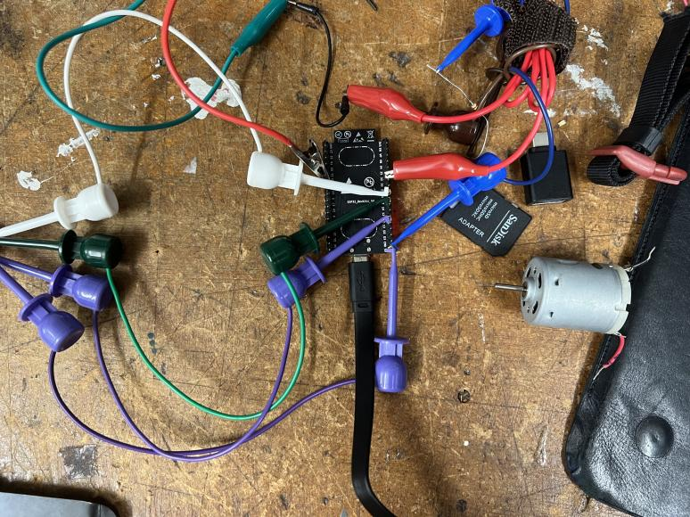
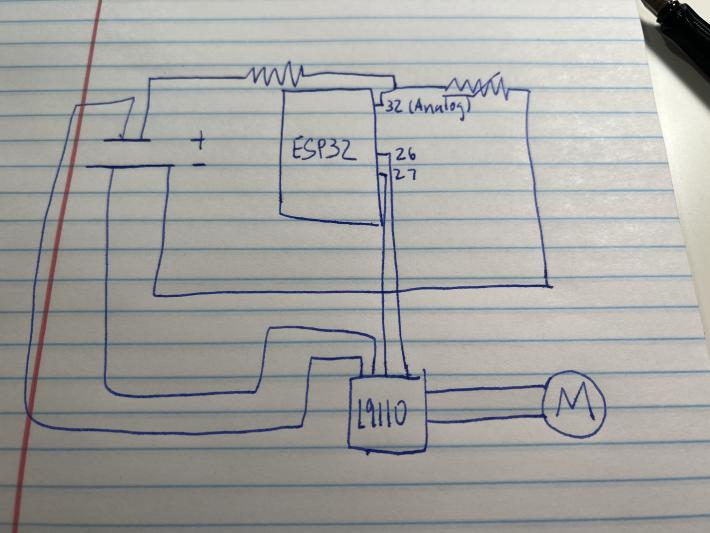
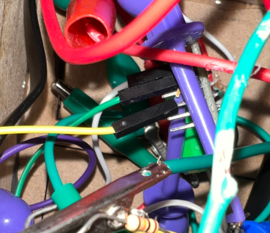

<div>
</div>
<div class="col-sm-4">

</div>
This is what the brain looks like. It looks very complex, so this is the schematic. (ALSO DONT WORRY I SWAPPED MOST OF THE EASY CLIPS WITH PIN-SOCKET WIRES SO THAT THE WHOLE THING DOESNT COST 600 DOLLARS TO MAKE)
<div>
</div>
<div class="col-sm-4">

</div>
The brain is divided into two main parts, the thermistor and the motor. The brain also takes signals from the webpage generated by itself. This input is the desired temperature of the helmet. When the actual temperature is greater than this value, the motor starts spinning. The brain is powered by a 5V battery pack.
<div>
</div>
<div class="col-sm-4">
<img alt="INTRO" src="./thermistor.png" class=center>
</div>
This is the thermistor (or rather, what it is connected to; the actual thermistor is barely outside of the frame) On the helmet, the thermistor is dangled down into the inside of the helmet in order to get a more accurate representation of the wearer's temperature.
<div>
</div>
<div class="col-sm-4">

</div>
This is the segment that is connected to a L9110 motor driver. This is what makes the actual water pump activate.
This is the code for the entire device:
```
//Thermometer with thermistor
/*thermistor parameters:
* Rteezeeeroee: 10 000 Ω
* B: 3977 K +- 0.75%
* teezeeeroee: 25 C
* +- 5%
*/
#include <Arduino.h>
#ifdef ESP32
#include <WiFi.h>
#include <AsyncTCP.h>
#include <SPIFFS.h>
#else
#include <ESP8266WiFi.h>
#include <ESPAsyncTCP.h>
#include <Hash.h>
#include <FS.h>
#endif
#include <ESPAsyncWebServer.h>
AsyncWebServer server(80);
#define Rteezeeeroee 10000 // Ω
#define B 3977 // K
//--------------------------------------
#define VCC 5 //Supply voltage
#define R 10000 //R=10KΩ
const char* ssid = "MAKERSPACE";
const char* password = "12345678";
const char* PARAM_STRING = "inputString";
const char* PARAM_INT = "inputInt";
const char* PARAM_FLOAT = "inputFloat";
const char index_html[] PROGMEM = R"rawliteral(
<!DOCTYPE HTML><html><head>
<title>ESP Input Form</title>
<meta name="viewport" content="width=device-width, initial-scale=1">
<script>
function submitMessage() {
alert("Saved value to ESP SPIFFS");
setTimeout(function(){ document.location.reload(false); }, 500);
}
</script></head><body>
<form action="/get" target="hidden-form">
inputString (current value %inputString%): <input type="text" name="inputString">
<input type="submit" value="Submit" onclick="submitMessage()">
</form><br>
<form action="/get" target="hidden-form">
inputInt (current value %inputInt%): <input type="number " name="inputInt">
<input type="submit" value="Submit" onclick="submitMessage()">
</form><br>
<form action="/get" target="hidden-form">
inputFloat (current value %inputFloat%): <input type="number " name="inputFloat">
<input type="submit" value="Submit" onclick="submitMessage()">
</form>
<iframe style="display:none" name="hidden-form"></iframe>
</body></html>)rawliteral";
//Variables
float RT;
float VR;
float ln;
float smallteeecks;
float teezeeeroee;
float VRT;
int INA = 27;
int INB = 26;
void notFound(AsyncWebServerRequest *request) {
request->send(404, "text/plain", "Not found");
}
String readFile(fs::FS &fs, const char * path){
Serial.printf("Reading file: %s\r\n", path);
File file = fs.open(path, "r");
if(!file || file.isDirectory()){
Serial.println("- empty file or failed to open file");
return String();
}
Serial.println("- read from file:");
String fileContent;
while(file.available()){
fileContent+=String((char)file.read());
}
file.close();
Serial.println(fileContent);
return fileContent;
}
void writeFile(fs::FS &fs, const char * path, const char * message){
Serial.printf("Writing file: %s\r\n", path);
File file = fs.open(path, "w");
if(!file){
Serial.println("- failed to open file for writing");
return;
}
if(file.print(message)){
Serial.println("- file written");
} else {
Serial.println("- write failed");
}
file.close();
}
String processor(const String& var){
//Serial.println(var);
if(var == "inputString"){
return readFile(SPIFFS, "/inputString.txt");
}
else if(var == "inputInt"){
return readFile(SPIFFS, "/inputInt.txt");
}
else if(var == "inputFloat"){
return readFile(SPIFFS, "/inputFloat.txt");
}
return String();
}
void setup() {
pinMode(INA,OUTPUT);
pinMode(INB,OUTPUT);
Serial.begin(9600);
teezeeeroee = 25 + 273.15; //Temperature teezeeeroee from datasheet, conversion from Celsius to kelvin
Serial.begin(115200);
// Initialize SPIFFS
#ifdef ESP32
if(!SPIFFS.begin(true)){
Serial.println("An Error has occurred while mounting SPIFFS");
return;
}
#else
if(!SPIFFS.begin()){
Serial.println("An Error has occurred while mounting SPIFFS");
return;
}
#endif
WiFi.mode(WIFI_STA);
WiFi.begin(ssid, password);
if (WiFi.waitForConnectResult() != WL_CONNECTED) {
Serial.println("WiFi Failed!");
return;
}
Serial.println();
Serial.print("IP Address: ");
Serial.println(WiFi.localIP());
// Send web page with input fields to client
server.on("/", HTTP_GET, [](AsyncWebServerRequest *request){
request->send_P(200, "text/html", index_html, processor);
});
// Send a GET request to <ESP_IP>/get?inputString=<inputMessage>
server.on("/get", HTTP_GET, [] (AsyncWebServerRequest *request) {
String inputMessage;
// GET inputString value on <ESP_IP>/get?inputString=<inputMessage>
if (request->hasParam(PARAM_STRING)) {
inputMessage = request->getParam(PARAM_STRING)->value();
writeFile(SPIFFS, "/inputString.txt", inputMessage.c_str());
}
// GET inputInt value on <ESP_IP>/get?inputInt=<inputMessage>
else if (request->hasParam(PARAM_INT)) {
inputMessage = request->getParam(PARAM_INT)->value();
writeFile(SPIFFS, "/inputInt.txt", inputMessage.c_str());
}
// GET inputFloat value on <ESP_IP>/get?inputFloat=<inputMessage>
else if (request->hasParam(PARAM_FLOAT)) {
inputMessage = request->getParam(PARAM_FLOAT)->value();
writeFile(SPIFFS, "/inputFloat.txt", inputMessage.c_str());
}
else {
inputMessage = "No message sent";
}
Serial.println(inputMessage);
request->send(200, "text/text", inputMessage);
});
server.onNotFound(notFound);
server.begin();
}
void loop() {
VRT = analogRead(32); //Acquisition analog value of VRT
VRT = (5.00 / 1023.00) * VRT; //Conversion to voltage
VR = VCC - VRT;
RT = VRT / (VR / R); //Resistance of RT
RT = RT + 17000;
ln = log(RT / Rteezeeeroee);
smallteeecks = (1 / ((ln / B) + (1 / teezeeeroee))); //Temperature from thermistor
smallteeecks = smallteeecks - 273.15;
smallteeecks = sqrt(smallteeecks) + 18;
Serial.print("Temperature:");
Serial.print("\t");
Serial.print(smallteeecks);
Serial.print("C\t\t");
Serial.print(ln);
Serial.print("smallteeecks");
Serial.print((1 / ((ln / B) + (1 / teezeeeroee))));
delay(500);
int yourInputInt = readFile(SPIFFS, "/inputInt.txt").toInt();
Serial.print("*** Your inputInt: ");
Serial.println(yourInputInt);
if (yourInputInt > smallteeecks){
digitalWrite(INA,HIGH);
digitalWrite(INB,HIGH);
}
else{
digitalWrite(INA,LOW);
digitalWrite(INB,HIGH);
}
}
```
[GO BACK](../index.html).
</div>